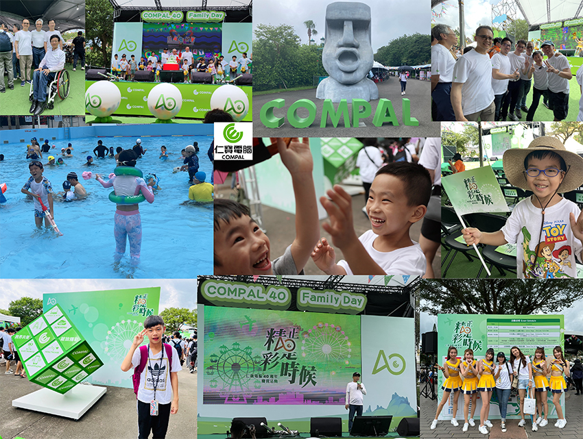
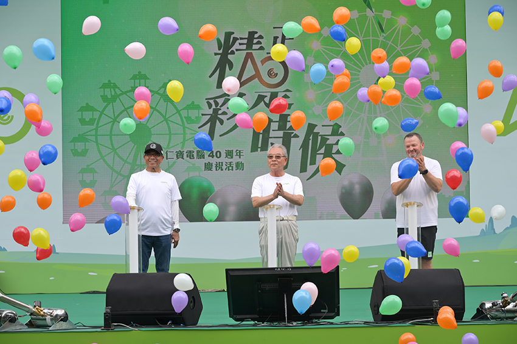
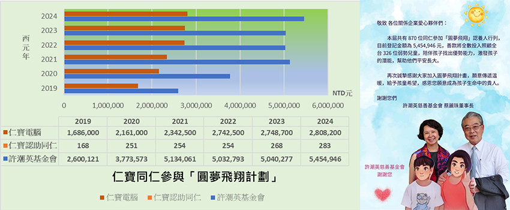

2024年仁寶電腦四十歲了！
2024年仁寶電腦捐贈新臺幣一仟萬協助援助花蓮強震後的災區重建！
2024年仁寶電腦正式加入RE100！正式加入由氣候組織 (The Climate Group) 與CDP合作領導
的全球再生能源倡議「RE100」，承諾於2050年實現100%使用再生能源的目標。
2024年仁寶電腦位北投士林科技園區之集團總部仍在如火如荼的建設中。
2024年仁寶持續入選「臺灣就業99指數」、「臺灣高薪100指數」成分股。
2024年仁寶用心營造DEI多元友善職場，新增3日幸福陪伴假，讓您增幸福。
2024年仁寶四十週年家庭日在六福村共12,805人一起歡慶！
2024年仁寶持續推動各項公益專案，推動優質教育，幫助更多的貧困學童和社區弱勢居民有更多
未來可以選擇前進的道路，一起遠離飢餓與貧窮，保有持續前進的勇氣。
|  |
| <照片：6月1日仁寶40週年「家庭日」> |
6月1日一早仁寶同仁和家人們，從台北、平鎮、林口、高雄向六福村出發，12,805人一同歡慶仁寶40週年慶。感謝所有福委會同仁們辛勤的籌劃此超過萬人的活動，也希望每位來參與家庭日的仁寶伙伴和家人們，都能留下2024年我們一起參與仁寶40+在六福村難忘回憶。這一次，不是在辦公室、會議室或線上會議中相見。可能是在仁寶大廳尋找49台大巴車長的手舉牌中匆忙說:「嗨」，或是一起堵在前進六福村路上！可能在六福村各個設施偶遇，或是一起在表演舞台前吶喊；可能是在仁寶水世界中一起享受小朋友們開心的笑聲中，開心見到彼此的家人。每個人一生中只有一次40歲，而我們一起慶祝仁寶第一個40年。
|  |
同時，2024年「許潮英慈善基金會」成立廿五年了！感恩每一年仁寶伙伴們一起參與許潮英慈善基金會的各項扶弱濟貧的活動，義工服務、捐款、捐物資。在大家支持下，25年來集合金仁寶集團公司和同仁們的愛心支持，照顧40多萬戶弱勢家庭，幫助全臺生活困苦學童能持續學習、深掘其天賦才能。
仁寶也從不間斷協助資訊科技教育推動，致力縮短城鄉落差，讓教育向下紮根；仁寶電腦得到教育部「112年度社會教育貢獻團體獎」的鼓勵，持續幫助學童們閱讀學習、建立自信，擁有朝向夢想前進的信念。2023年仁寶同仁捐贈NTD5,444,718元現金與物資支持許潮英慈善基金會幫助有需要的小朋友們和貧困家庭；2023年仁寶社會參與投入總金額27,229,020元，受益人數約75,163人次。
2024年「仁寶x許潮英圓夢飛翔計劃」認助人的募集活動至6月21 日登記截止，共有仁寶伙伴283人參加，捐贈新臺幣2,808,200元，可以幫助全臺156位弱勢學童們一年的才藝學習。 從2019~2024近6年來仁寶同仁參與圓夢飛翔計劃，同仁1,478人次，累計捐贈新臺幣14,488,900元助學金幫助小朋友們學習。許潮英基金會推動圓夢飛翔計劃2012~2023年總計幫助學童19,406人次，累計捐贈新臺幣29,429,488元。
感謝每一年都有新的仁寶愛心伙伴們加入認助人的隊伍，一起幫助更多需要用愛灌溉成長的孩子。
|  |
2024年我們仍將一起關懷社會，分享愛與關懷。 仁寶 謝謝有您一起
More…
• RE100 • 更多仁寶ESG資訊 • 仁寶ESG Fackbook粉絲團